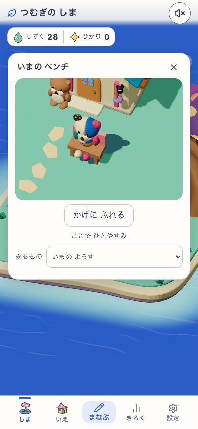
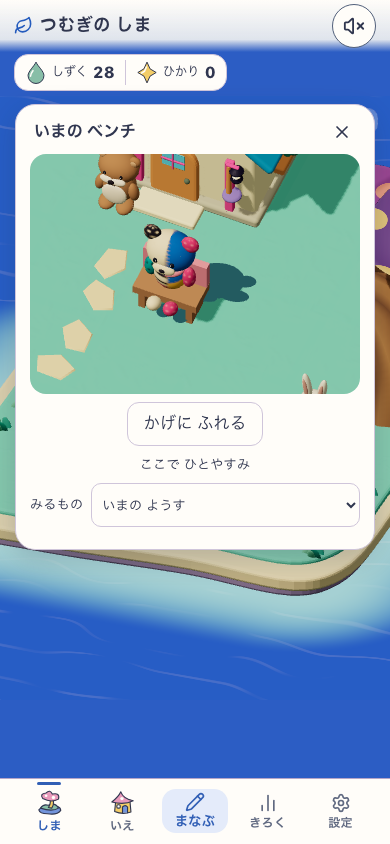
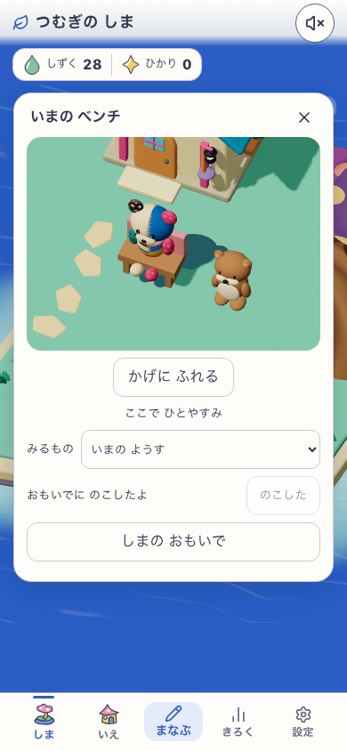
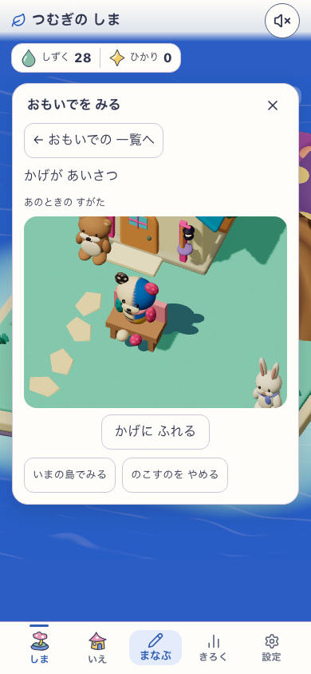
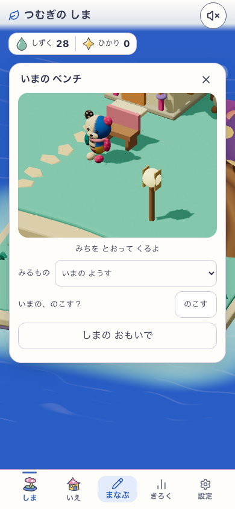
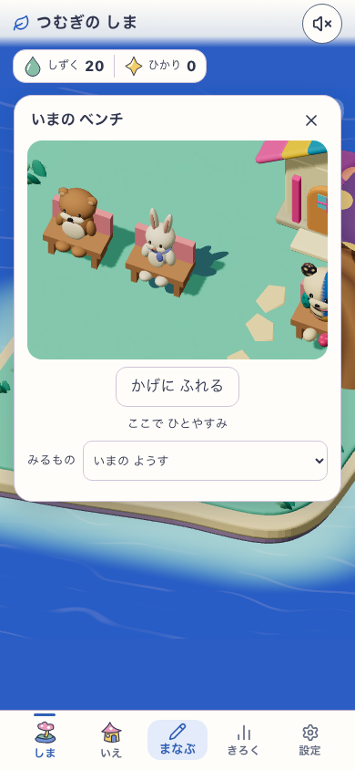
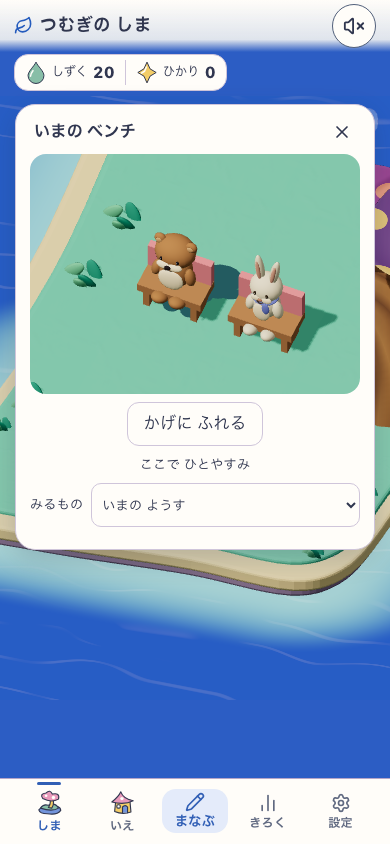
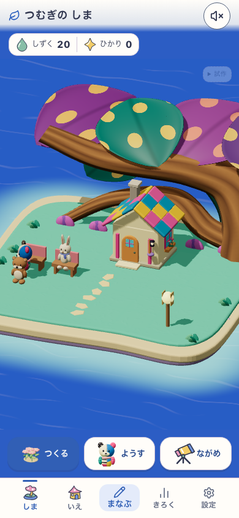
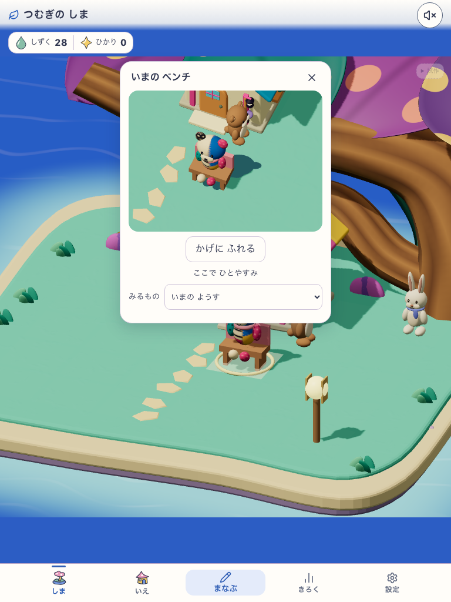
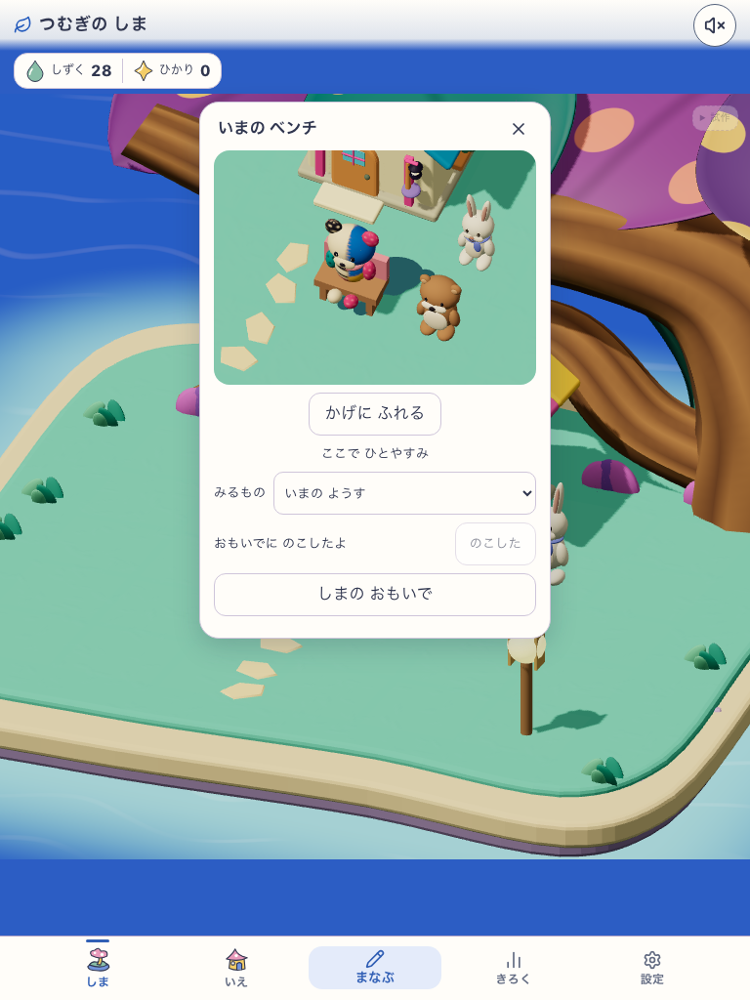
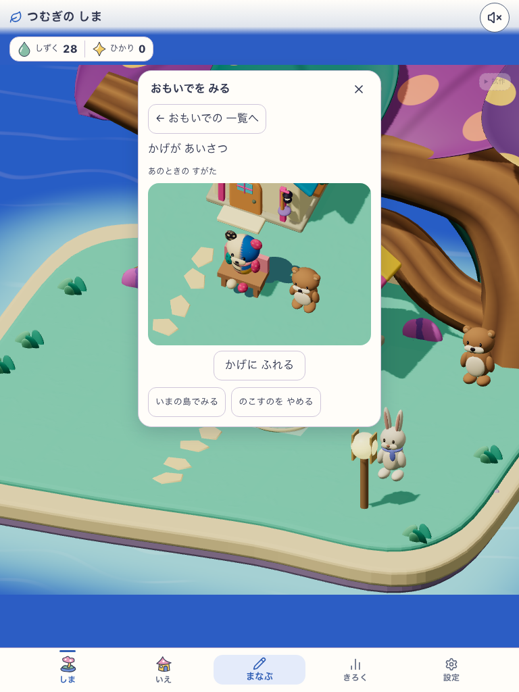
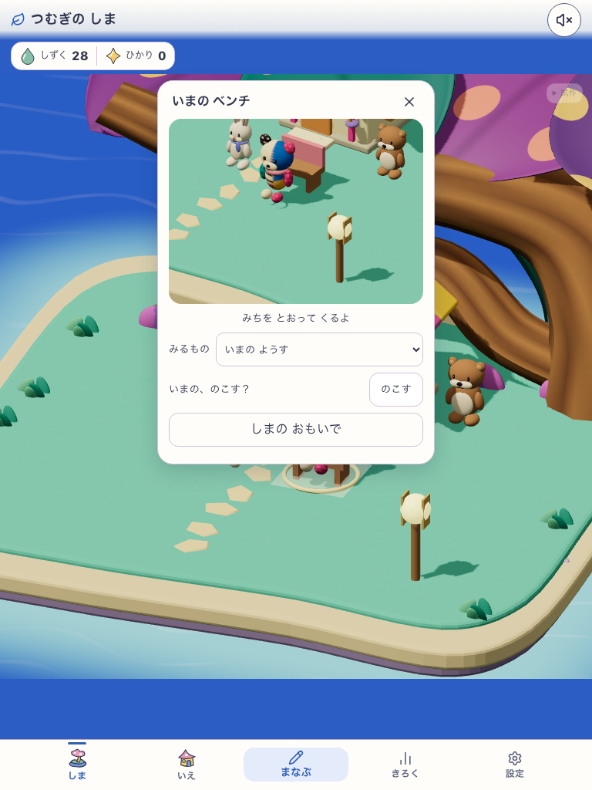
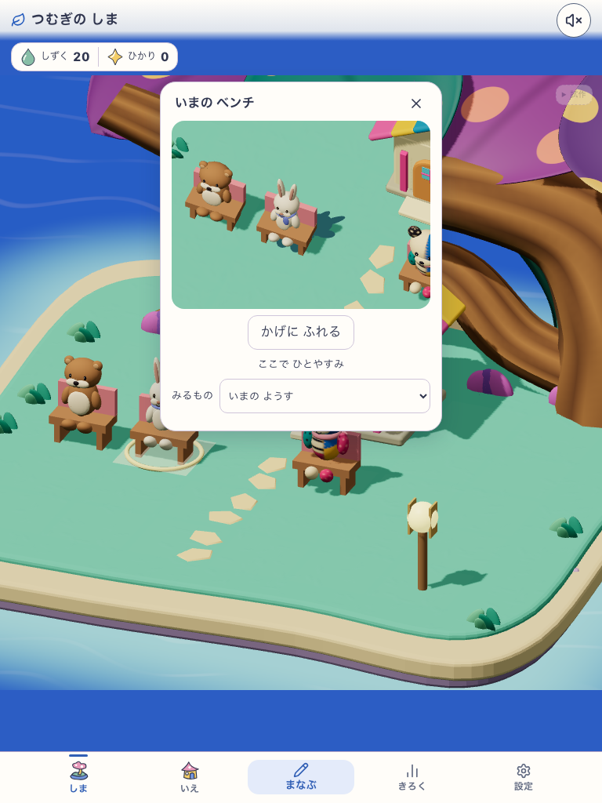
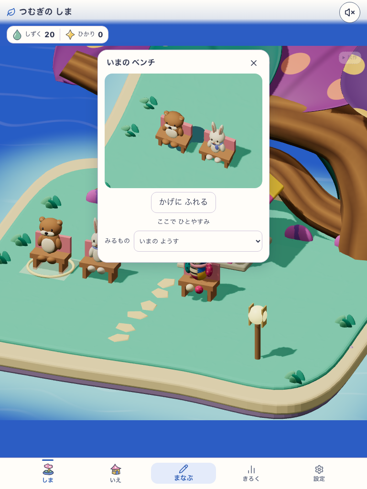
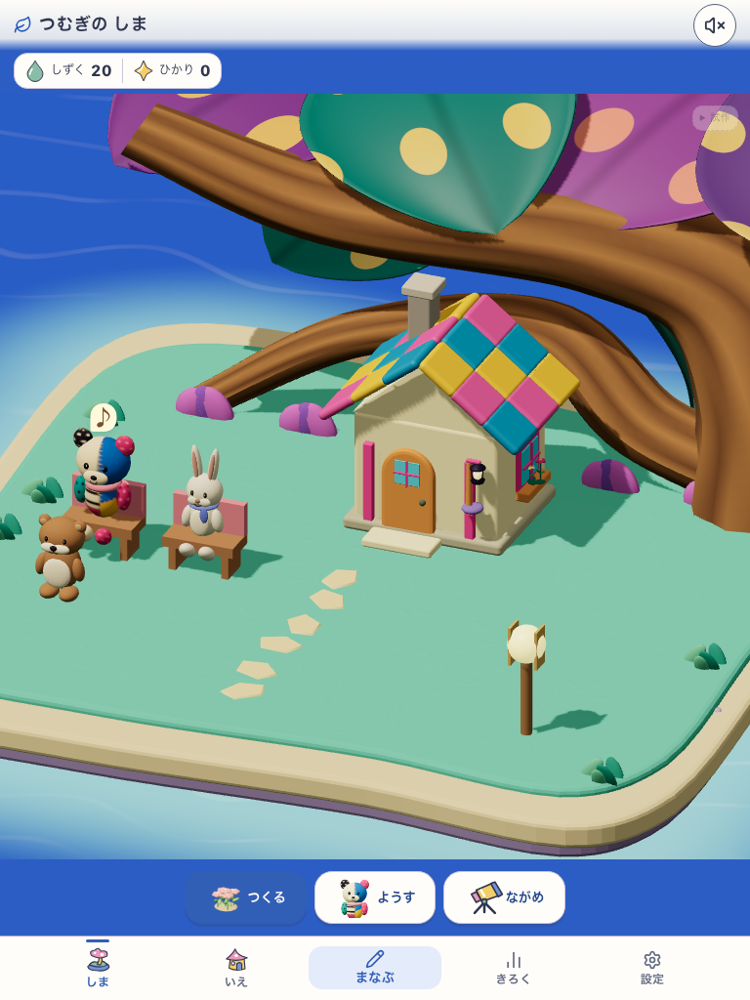
canopy-dots-c3-v1 / shadow-greeting-v1. Actual build: development-local.
Source 68b0d5ed05bc880f896d03154d15758c8753554168ffafdcb8052312159e58fd.
20 QA credits; real UI purchases and projected shadow taps. No actor rerolls.
Visual C3 HOLD / Human N=0 / scoped runtime PASS. C3 generated characters are NOT character designs.














